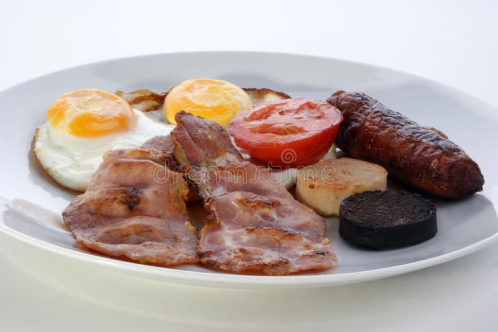

Irish Breakfast
At our bed and breakfast, we offer a delicious and hearty Irish breakfast to energize you for your day of exploring. Our breakfast consists of traditional Irish staples including black and white pudding, bacon rashers, sausages, fried eggs, grilled tomatoes and mushrooms, and baked beans.